第 2 章 先给你准备一个机器人¶
本页目录
Robotic Manipulation: Perception, Planning, and Control
本章目录 · 章节概览
本章目录¶
引言¶
这一章，我们要给你的“机甲”配上合适的装备。我希望你能了解讲义中使用的机器人硬件，知道它与其他现有硬件相比有什么特点。学完本章，你还应该明白怎样仿真这些机器人，以及通过机器人的接口可以发出哪些指令。
2.1 机器人描述文件¶
后续大多数章节会反复使用一两种机器人配置。不过，现代机器人学的一大优点是，许多方法具有很强的通用性。我们在讲义中开发的工具，往往可以方便地从一种机器人迁移到另一种机器人上。也许将来更新讲义时，你真的可以在这一章里搭建自己的机器人，再用它完成后面的学习！
能够方便地仿真和控制不同机器人，部分得益于通用机器人描述文件的普及。遗憾的是，这个领域还没有统一采用某一种格式，各种格式也都有自己的特点和不足。Drake 目前可以加载通用机器人描述格式（URDF）、仿真描述格式（SDF），并对 MuJoCo 的 MJCF 格式提供有限支持。
Drake 开发者一直在尝试把改进贡献给 SDF 上游项目，而不是再另起炉灶，发明一种新格式。不过，我们确实提供了一个很简单的 YAML 规范，叫作 Drake 模型指令（Drake Model Directives）。它可以把采用不同文件格式的多个机器人和物体，方便地加载到同一个仿真中。你已经在第 1 章的示例 notebook里见过这种用法。
2.2 机械臂¶
市面上的机械臂种类很多，该怎样选呢？成本、可靠性、易用性、负载能力、运动范围……这些都值得考虑。研究实验室和初创公司看重的因素，也可能很不一样。
示例 2.1 浏览机械臂¶
我准备了一个简单的示例，供你查看目前比较常见的几种机械臂。如果列表里还没有你喜欢的那一款，欢迎告诉我。
运行示例：在 Colab 中打开
不过，只要加上一项要求，可选的机械臂就会迅速缩小到少数几个平台：它必须支持关节力矩的测量和控制。在具备这一能力的机器人中，本讲义最常使用的是 Kuka LBR iiwa。我会尽量采用小写的“iiwa”，以便与制造商的写法保持一致，虽然每次看起来都让我有点不习惯。
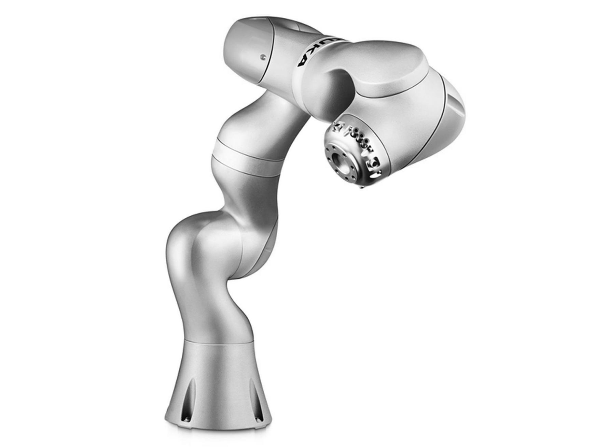
图 2.1：Kuka LBR iiwa 机器人。图中型号的额定负载为 7 kg。
即使是很先进的应用，也不见得一定需要关节力矩测量和控制。但我很关心机器人与外界接触时发生的事情，所以更愿意先拥有这项能力，再探索它是否必要，而不想事后猜测：如果当初有它，情况会不会不同？
要理解其中的原因，我们先比较两类机器人：一类是占多数的位置控制机器人；另一类则接受了额外的成本和复杂性，以提供力矩测量和控制。
2.2.1 位置控制机器人¶
| Universal Robots UR10 | ABB YuMi |
|---|---|
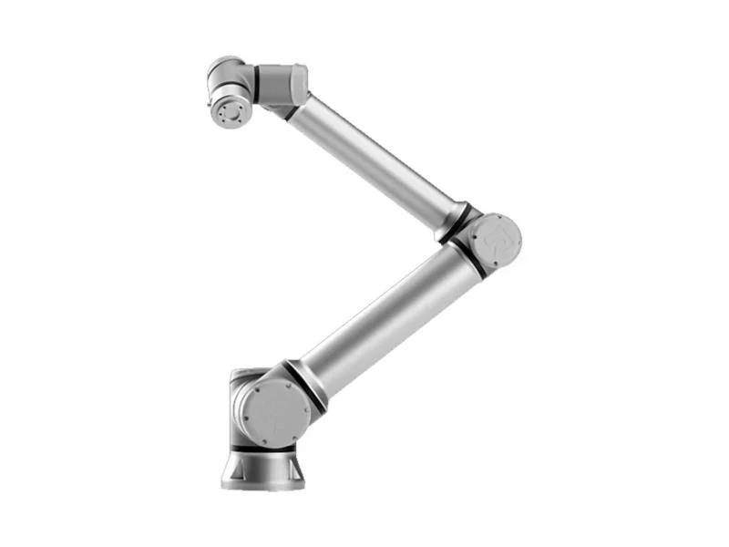 |
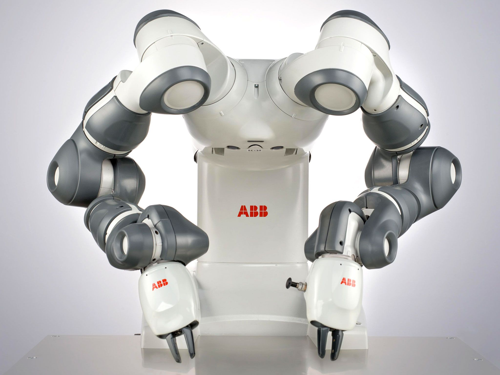 |
图 2.2：两款常见的位置控制机械臂。左侧为 Universal Robots 的 UR10，右侧为 ABB 的 YuMi。
目前，大多数机械臂都采用“位置控制”：给定期望的关节位置或关节轨迹，机器人就会以较高的精度执行。事实上，几乎所有机械臂都能做位置控制。如果机器人提供带宽足够高的力矩控制接口，当然也可以用它来调节位置。因此，称一台机器人为“位置控制机器人”，往往只是委婉地说，它不提供力矩控制接口。
为什么位置控制比力矩控制更普遍？
上面这样的轻型机械臂通常由电机驱动。对于质量较好的电机，例如经过绕组设计来减小力矩波动的电机，输出力矩与施加的电流应当成正比：
其中，\(\tau_{motor}\) 是电机力矩，\(i\) 是施加的电流，\(k_t\) 是电机力矩常数。类似地，施加的电压与电机的稳态转速之间，也存在简单的仿射关系。既然能控制电流，为什么不能直接控制力矩呢？
原因在于传动机构。为了兼顾成本和重量，我们通常选用较小的电机，再配上大减速比的齿轮传动。齿轮传动会带来齿隙、振动、摩擦等难以建模的动力学效应，使电流与关节力矩之间不再保持简单的关系。一般认为，当减速比很大，比如远大于 10 时，这些未建模因素已经不能忽略。
怎样实现位置控制？¶
既然传动机构的动力学模型不够准确，我们该怎么办？如果只想调节电机的电流或转速，在传动机构的电机侧装传感器就够了。但要准确控制关节，通常还需要在输出侧增加传感器。
虽然传动机构产生的力矩很难准确计算，它也不是任意变化的。例如，它不会凭空向系统注入能量。更关键的是，电机电流与关节力矩，以及最终的关节加速度之间，仍然有单调不减的关系。
这里的“单调”是有意选择的：它表示“不减”，并不意味着“严格增加”。比如，关节从静止开始运动时，较小的力矩可能被静摩擦抵消，输出端仍然没有加速度。
关节上最常见的是位置传感器，通常采用编码器或电位计。这些传感器价格低、精度高，也很可靠。经过适当的信号滤波和调理后，我们通常可以得到准确的关节位置和速度。对位置求两次导数，也可以估计加速度，但噪声往往较大，不太适合用于需要精密反馈的控制回路。
有了位置传感器，就足以准确跟踪机械臂的期望位置轨迹。对某个关节，记当前位置为 \(q\)，期望轨迹为 \(q^d(t)\)，可以使用比例—积分—微分（PID）控制：
其中，\(k_p\)、\(k_d\) 和 \(k_i\) 分别是位置、速度和积分增益。
PID 控制有丰富的理论，怎样选择增益也积累了大量经验，这里就不再展开。不过有一点值得注意：仿真位置控制机器人时，实机和仿真往往需要采用不同的增益。原因不仅在于传动机构的动力学，还在于真实硬件上的 PID 控制器通常输出电压指令，通过脉宽调制（PWM）实现，而不是直接输出电流指令。
过去，补上这部分模型并不是机器人仿真的首要任务。仿真与现实之间的差距，也就是“sim-to-real”差距，还主要受许多其他细节影响。但我想，随着这个领域逐渐成熟，主流仿真器最终也会把这些因素考虑进去。
有些读者也许会想：“神经网络什么都能建模，我才不怕复杂的传动机构！”我确实认为，这条路值得乐观期待，也已经有一些初步成果，例如参考文献 1。当然，它还不能完全替代基于第一性原理的模型：后者只需从描述文件中读取少量参数，就能适用于新的执行器。不过，学习得到的模型仍然可能很有用。
补充：带传动机构的连杆动力学¶
有件事可能让你意外：机械臂各关节的动力学高度耦合，还会随状态变化，但实际使用时，PID 增益往往按关节分别选取，而且保持不变，并不采用增益调度。
想想看，机械臂完全伸展、托着一壶牛奶时，与空载、竖直下垂时，所需的电机指令应该差很多吧？然而，实际需要的增益和指令，可能并没有想象中那么不同。
电机通常在较高转速下效率最高，往往每分钟上百转，甚至上千转。机器人即使能动得这么快，我们大概也不希望它如此运动。所以，电驱动机器人几乎都采用相当大的减速比，常见的量级是 100:1：电机转 100 圈，输出端才转 1 圈，输出力矩则是电机力矩的 100 倍。
若减速比为 \(n\)，被驱动关节的位置为 \(q\)，则有：
即使只有一个关节，这也会明显改变系统的动力学。先不考虑电机自身，把牛顿第二定律 \(ma = \sum f\) 写成转动形式，得到关节力矩与加速度的关系：
其中，\(I_{arm}\) 是转动惯量。例如，对于单摆，方程可以写为：
关节力矩 \(\tau\) 实际上来自电机。改用电机侧的坐标表示，就有：
两边再除以 \(n\)，并把电机自身的转动惯量计入，比如旋转磁体带来的惯量。它在电机侧不受减速比影响，于是得到：
这揭示了一件有意思的事：电机的质量可能只占机器人总质量的一小部分，但在大减速比的机器人上，它仍然可能显著影响关节动力学。
我们把传动机构一侧的惯量，按传动比折算到另一侧后所表现出的惯性负载，称为折算惯量（reflected inertia）。机械臂惯量折算到电机侧，会除以减速比的平方；反过来，电机惯量折算到机械臂侧，则要乘以减速比的平方。
在多连杆系统中，\(I_{arm}\) 会随状态变化，既包含被驱动连杆的惯量，也包含其他关节的惯性耦合。而 \(I_{motor}\) 是常数，只作用于当前关节。减速比足够大时，电机惯量项就会占主导，带来两个重要结果：
- 机械臂动力学方程近似呈对角形式，因为关节之间的惯性耦合项相对较小。
- 机器人在整个工作空间中的动力学变化较小，因为随状态变化的那些项相对较小。
因此，按关节分别调出一组固定的反馈增益，让它们在不同构型下都表现良好，就变得相对容易。
2.2.2 力矩控制机器人¶
直接控制关节力矩的机器人虽然没有那么普遍，但也有不少。实现这项能力，大致有几条路线。
第一条路线是使用较小的减速比，比如不超过 10:1，让摩擦力的影响可以忽略。早期的“直驱机器人”往往需要很大的电机，负载能力却有限。参考文献 2 后来，Barrett WAM 等机械臂采用绳索传动，把较大的电机放在基座上，以减轻机械臂本体的重量。近几年，高力矩外转子电机和无框电机的进步，又推动了一代低成本“准直驱”机器人出现，例如 MIT Cheetah、Berkeley Blue 和 Halodi Eve。参考文献 3
液压执行器是另一条路线，它可以在不使用大减速比传动的情况下产生较大力矩。Sarcos 曾开发一系列力矩控制机械臂和人形机器人，Boston Dynamics 的许多著名机器人也采用液压驱动，尽管近年来电驱动越来越常见。
这类机器人通常共用一个中央液压泵，每个执行器配有一个轻量的阀门，控制液体流经执行器还是旁路。执行器两侧的压差，与最终产生的力或力矩至少有近似的对应关系。
还有一种办法，是保留大减速比电机，但在执行器的关节侧增加传感器，直接测量输出力矩。本讲义使用的 Kuka iiwa 就采用这条路线：它在传动机构中集成了应变片。不过，传动机构的刚度与力／力矩测量精度之间存在权衡。参考文献 4 iiwa 的传动机构中包含一个柔轮（Flex Spline），其刚度约为 5000 N·m/rad。参考文献 5
Gill Pratt 把这个思路进一步发展，提出了“串联弹性执行器”：在传动链中加入刚度更低的弹簧，同时测量电机侧和关节侧的位置，据此估计施加的力矩。参考文献 6 Rethink 的 Baxter 和 Sawyer 就使用了这种执行器。我不记得它们公开过弹簧刚度，但采用类似思路的 HEBI Robotics 执行器，其刚度更接近 100 N·m/rad。
即使在 iiwa 上，关节弹性也足够明显。为了实现高性能关节控制，底层控制器需要专门考虑这一因素。参考文献 7 后面讨论力控制时，我们会进一步介绍这些细节。
2.2.3 日益丰富的硬件¶
前面提到的低成本力矩控制机械臂，可能只是机械臂大规模普及的开端。疫情期间，我看到不少人在家里使用 xArm 等价格较低的机器人。随着需求增加，成本还会继续下降。
相比之下，研究腿式机器人时，我们有几十年都在使用实验室自制的原型机。它们往往由研究生，有时也包括教授，在走廊另一头的机加工车间里搭建。如今能够直接使用经过专业设计、质量可靠、能长时间运行的硬件，实在是一件令人高兴的事。
这还意味着，一个实验室测试的算法，可以由另一所大学的实验室在几乎相同的硬件上验证。研究结果的复现和分享，因此达到了过去难以实现的程度。价格继续下降后，更多实验室和其他环境中也会出现类似的机器人。这是我对未来几年如此乐观的重要原因之一。
现在确实是研究机器人操作的好时候。
2.2.4 Kuka iiwa 仿真¶
接下来，该把选好的机械臂放进仿真了。第一步是取得机器人描述文件，通常是 URDF 或 SDF。为了方便使用，Drake 随库提供了包括 iiwa 在内的几种机器人模型。如果想仿真其他机器人，大多数商用机器人的 URDF 或 SDF 文件也能在网上找到。
不过，这些模型的质量差别很大。我们甚至见过连杆长度、几何形状等运动学参数出现明显错误；惯量、摩擦等动力学参数尤其容易不准确。有时模型还会违反基本的数学或物理要求，比如 URDF／SDF 中指定的惯量矩阵，根本不可能对应任何真实刚体。遇到这种情况，Drake 会在加载时报错。我们宁愿尽早指出问题，也不愿让仿真继续给出错误结果。
此外，直接从 SolidWorks 等 CAD 软件导出机器人描述文件的支持，也在不断完善。
拿到描述文件后，就要把它导入物理引擎。在 Drake 中，物理引擎叫作 MultibodyPlant。“plant”这个词乍看有些奇怪，却是控制领域的常用术语，指待控制的物理系统，也就是“被控对象”。这个用法最早源于对化工厂的控制。
我很重视物理引擎与控制理论之间的这种联系。像 Drake 这样，专门为控制理论的设计和分析提供支持的物理引擎，其实并不多。
MultibodyPlant 提供了丰富的类方法，可以计算机器人的运动学和动力学。无论是求质心位置、运动学雅可比矩阵，还是其他类似查询，都要用到这个类的接口。
同时，它也实现了 Drake 系统框架中的 System 接口，拥有输入和输出端口。要把物理引擎与感知、规划、控制等其他系统一起仿真或分析，就需要把它们连接成系统框图。
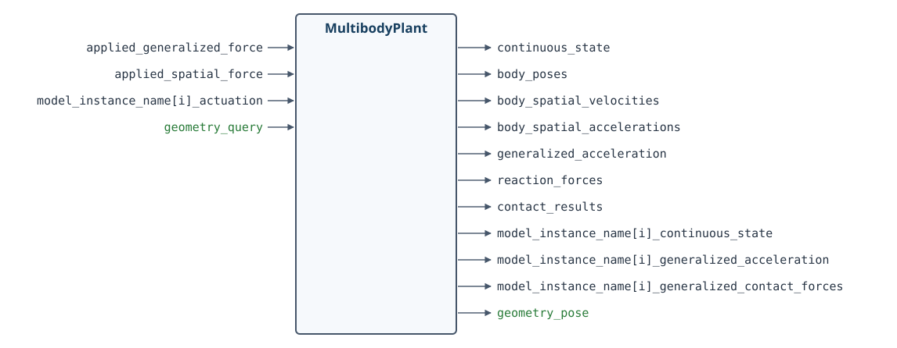
MultibodyPlant 端口图。端口名称保留英文，按原文定义重新排版，以避免 PDF 中的文字被裁切。
物理引擎既复杂又通用，自然会有很多输入和输出端口，其中大多数是可选的。下面的示例会说明怎样使用它们。
示例 2.2 仿真未施加驱动力矩的 iiwa¶
这个示例值得花几分钟亲手运行。它不仅能帮助你认识物理引擎，也会介绍在 Drake 中进行仿真的一些基本操作。
运行示例：在 Colab 中打开
要直观地查看物理引擎的运行结果，最好使用二维或三维可视化工具。为此，还需要一个负责管理场景几何的系统，在 Drake 中叫作 SceneGraph。有了它，就可以接入不同的可视化工具和传感器，把场景渲染出来。
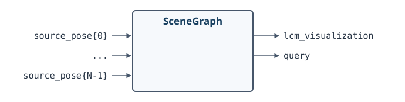
示例 2.3 场景可视化¶
这个示例看起来有意思多了，因为现在我们终于能看到三维场景！
运行示例：在 Colab 中打开
你也许会问，为什么不让 MultibodyPlant 顺便管理场景几何？因为在很多应用中，我们需要渲染复杂场景、使用复杂传感器，却希望采用自己的动力学模型，而不是默认的物理引擎。
自动驾驶就是一个很好的例子。我们会把车辆和环境的全部几何信息交给 SceneGraph，但仿真车辆时，往往只用很简单的车辆模型，不必在物理引擎里详细模拟轮胎力学。我的《欠驱动机器人学》课程中也有不少类似例子，大量使用了这样的简单模型。
现在，iiwa 的基本仿真已经有了，但一些细节也随之出现。物理引擎需要知道各个关节施加什么力矩。在这个示例中，我们设为零力矩，于是机械臂在重力作用下落了下来。真实 iiwa 却不会这样：即使控制器关闭，关节上的力矩也几乎不可能为零。
与许多成熟的工业机械臂一样，iiwa 的每个关节都有机械制动器，关闭控制器时就会接合。要仿真这种状态，物理引擎还需要考虑制动器产生的力矩。
事实上，即使控制器打开，iiwa 也不允许我们真正向电机发送零力矩指令，尽管它本身是力矩控制机器人。它的软件接口接收的是“前馈力矩”，这些力矩会叠加到底层控制器的输出上。底层控制器一直在补偿重力以及电机、传动机构的动力学。这个限制有时让人觉得不方便，但我们大概也不想为了仿真，把驱动机构的所有细节都重新研究一遍。
因此，要得到一个简单又合理的 iiwa 仿真，仍然必须把 Kuka 的底层控制器包括进来。我们会使用 iiwa 的“关节阻抗控制”模式。等到需要进一步提高机器人的表现时，再详细讨论它；目前可以先把它当作已有组件。
示例 2.4 加入 iiwa 底层控制器¶
这个示例加入了 iiwa 控制器，并将期望位置设为机器人当前的关节位置。这次给定的是位置，而不再是力矩。仿真更接近真实机器人了，只不过画面又变得有些无聊。
运行示例：在 Colab 中打开
最后再补充一点。如果操作任务中的机器人运动较慢，质量、惯量和力的作用可能不如机器人及物体在空间中的位置那么重要。你也许会觉得，为这种任务做完整的动力学仿真有些大材小用。我其实同意。
但要让纯运动学仿真遵守基本的交互规律，却出乎意料地困难。比如，它怎样判断物体究竟有没有被拿起来？相关讨论可见参考文献 8。目前，Drake 中的仿真大多使用完整物理引擎，而操作规划和控制则常常采用更简单的模型。
2.3 机械手¶
你可能已经注意到，刚才的 iiwa 模型还没有安装机械手。机器人出厂时带有安装法兰，可以接上你选择的末端执行器；它还提供一些连接接口，让末端执行器接入计算机，而不用把电线沿着机器人外侧一路布置下来。
所以，我们还有一个选择要做：该用什么样的机械手？
示例 2.5 浏览机械手¶
与浏览机械臂一样，我们也可以在 Drake 中使用相同类型的界面，查看不同的机械手模型。目前收录的机械手还没有那么多。如果你喜欢的型号不在列表里，欢迎告诉我。
运行示例：在 Colab 中打开
有意思的是，在末端执行器的选择上，操作研究者往往形成几个不同的阵营。
2.3.1 灵巧手¶
| Shadow Dexterous Hand | Allegro Hand |
|---|---|
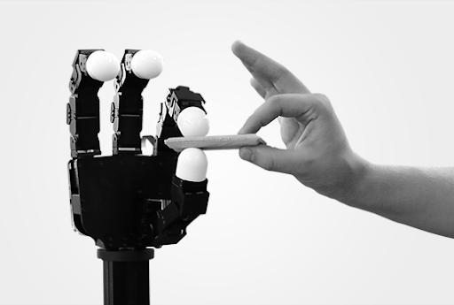 |
图 2.3：灵巧手。左侧为 Shadow Dexterous Hand，右侧为 Allegro Hand。
我们对人手着迷，当然有充分的理由，也一直梦想着造出同样灵巧、拥有丰富感知能力的机械手。但现实是，我们还没有达到这个水平。有些研究者选择继续追求这个目标，使用市面上最好的灵巧手，同时也要应对随之而来的复杂性和鲁棒性不足。
OpenAI 著名的 “Learning Dexterity”项目就用 Shadow 手操作魔方。为了让机械手经受住长时间的学习实验，团队在硬件上投入的工作，也是这个项目不可忽略的一部分。
新的制造技术可能会改变这个领域。比如，FLLEX v2 的视频就很惊艳。参考文献 9 我很乐观地相信，不久之后，我们会拥有能力更强、也更可靠的灵巧手。
2.3.2 简单夹爪¶
图 2.4：Ken Salisbury 团队使用 PR1 进行遥操作的视频，如今已是一个经典例子：只用非常简单的机械手，也能完成许多实用的工作。他们的网站上还有扫地、取啤酒、从洗碗机中取出餐具等视频。
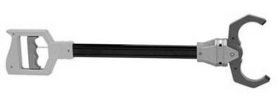
另一派研究者认为，灵巧手并非必需。哪怕给你一个玩具店里的简单夹爪，你也能用它完成不少家务。前面的 PR1 视频很好地说明了这一点。
支持简单机械手的另一个重要理由，是减少复杂性之后，问题往往更清楚，也更容易分析。如果先研究简单夹爪，能帮助我们更深入地理解为什么需要灵巧手，那就很好；我相信确实如此。对于本讲义的大多数内容，简单的双指夹爪最适合教学。具体来说，我选择了 Schunk WSG 050，过去几年，我们在研究中大量使用过它。后面需要说明某些概念时，也会尝试其他末端执行器。
当然，结构简单、自由度少，并不意味着质量低。恰恰相反，Schunk WSG 是一款质量很高的夹爪。它在唯一的自由度上提供力控制和力测量，其精度甚至超过 Kuka。要在关节众多的灵巧手上达到同样水平，就困难得多。
2.3.3 柔性／欠驱动机械手¶
第三个阵营出现得较晚，主张用巧妙的机械结构解决问题，这类设计通常称为“欠驱动机械手”。基本思路是：对于许多任务，执行器的数量不必与关节数量相同。
不少欠驱动机械手用绳索传动来闭合手指。一根肌腱就能带动手指上的多个关节弯曲。如果设计得当，即使不改变执行器指令，手指也能被动地顺应被抓物体的形状。参考文献 10 这种效果并不一定需要绳索，巧妙设计的刚性连杆机构也可以实现类似行为。
| RightHand Robotics Reflex2 | Robotiq 三指夹爪 |
|---|---|
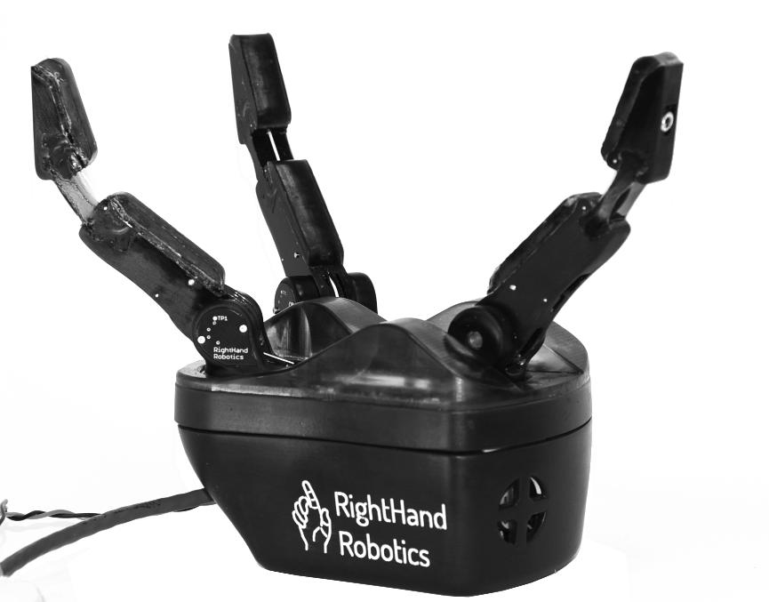 |
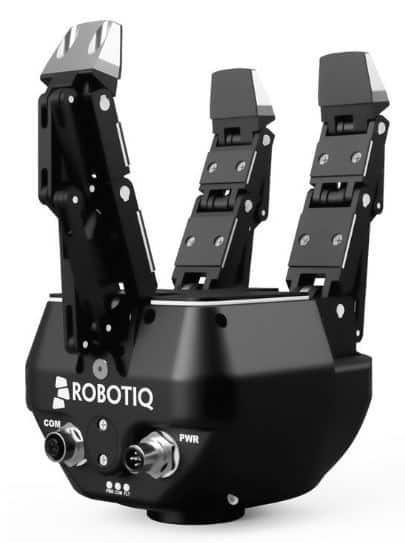 |
图 2.5：欠驱动机械手。左侧的 RightHand Robotics Reflex2 由 i-HY 机械手发展而来，相关研究见参考文献 10。右侧为 Robotiq 三指夹爪。
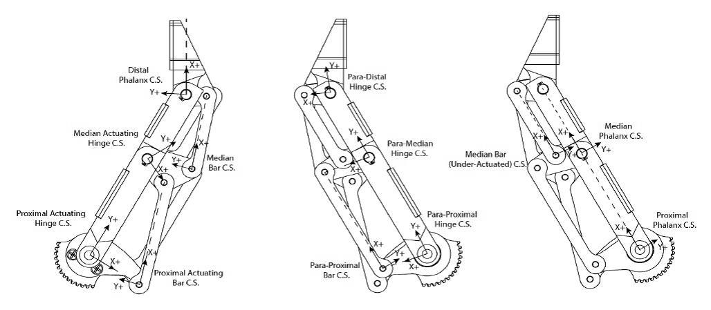
图 2.6：通过巧妙的连杆机构，欠驱动的 Robotiq 三指夹爪能够顺应被抓物体的形状。
如果把欠驱动和被动柔顺的思路再往前推进，就会走向完全柔软的机械手，或至少是完全柔软的手指。近几年，软体机器人领域正在迅速改变机器人的制造方式：肢体、执行器、传感器，甚至供能装置，都可以做成柔软的。这些技术有望提高耐用性、降低成本，也可能让机器人在人身边工作时更加安全。
| 哈佛大学的 3D 打印软体手 | RBO Hand 2 |
|---|---|
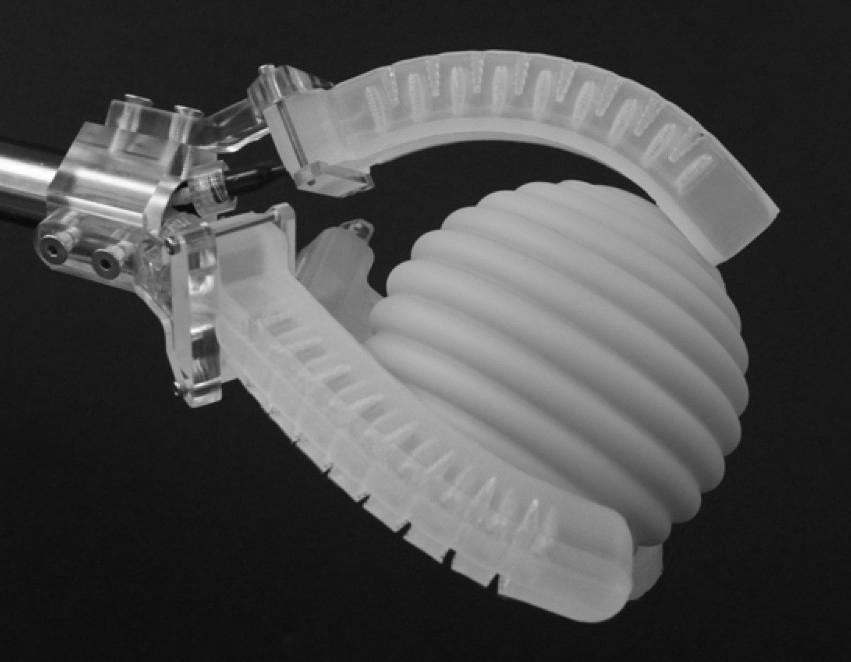 |
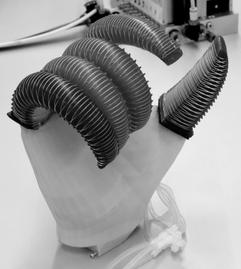 |
图 2.7：欠驱动机械手。左侧为哈佛大学的 3D 打印软体手，图片由 Ryan Truby 提供；右侧为 RBO Hand 2，图片由 Disney Research Zurich 提供。
欠驱动机械手很好地说明了，机械设计可以怎样减轻执行器和控制系统的负担。它们常常特别擅长某一类任务，尤其是包络抓取，但通用性相对有限。比如，要用这样的手给衬衫扣纽扣，就会很难。不过，它们也在变得越来越灵巧，不妨看看下面的视频。
2.3.4 其他末端执行器¶
末端执行器不一定要模仿人手，无论是灵巧版本还是简化版本。如今，许多工业抓取与放置任务使用真空夹爪，也就是吸盘夹爪。
吸盘对许多物体都很有效，但并非适用于所有物体。有的物体太软或孔隙太多，不容易吸住；有的太脆弱或太重，不能只靠上方的吸力提起，还需要从下方支撑。一些机械手会先用掌心的吸盘把物体拿起来，再用传统手指稳固抓取。
其他巧妙的夹爪设计也不少。我很喜欢的一种，是颗粒阻塞夹爪（jamming gripper）。它由一个装满咖啡粉或其他颗粒材料的软袋构成。把软袋压在物体上，颗粒就会流动并包住物体；再对软袋抽真空，颗粒发生“阻塞”，软袋迅速变硬，就形成了稳定的抓取。参考文献 11
这个视频展示了另一种巧妙的设计：在指尖装上可驱动的滚轮，帮助物体在手中改变朝向。
还有一个不必执着于灵巧手的理由：人类许多有意思的操作，其实也是借助工具完成的。我很喜欢 Matt Mason 在一次机器人学研讨会末尾的问答中给出的回答。他多年来一直主张使用简单夹爪，认为厨房等环境中的实用机器人，很可能会配备可以快速更换的专用工具。
如果灵巧手的主要任务只是更换工具，那么不妨直接给机器人安装工具快换装置，配上兼容的工具，省去机械手本身的复杂性。
2.3.5 如果你还没见过……¶
有一次参加活动，报名表上问：“有史以来，你最喜欢哪个机器人？真实的或虚构的都可以。”
对于一个喜欢机器人的人来说，这个问题可不好回答。我最后选了 Ishikawa 团队的高速多指机械手。这个项目早在 2004 年就开始拿出令人惊叹的成果。他们给机械手“超频”：在短时间内输入较大的电流，这样的电流并不适合长时间维持，再配合高速相机，实现了那些精彩的演示。2017 年，他们还展示了操作魔方。
实在精彩。
2.4 传感器¶
到目前为止，我们还没怎么讨论传感器。等到介绍用相机、深度相机进行感知，以及触觉感知时，它们会成为重要主题。这里先不展开，等需要时再详细介绍。
目前，我们先关注机器人的关节传感器。iiwa 和 Schunk WSG 都能提供关节反馈：
- iiwa 驱动程序为七个关节分别提供“位置测量值”“速度估计值”和“力矩测量值”。还记得吗，关节加速度的噪声通常太大，不适合直接依赖。
- Schunk WSG 则提供“状态测量值”，包括位置和速度，以及“力测量值”。
这些反馈都可以作为系统框图中的输出端口，供其他系统使用。
2.5 将各部分整合起来¶
如果你已经运行过前面的示例，就会发现，要合理地仿真机器人，光有物理引擎还不够。物理模型、执行器模型、传感器模型和底层控制器，都需要放进同一个框架。在 Drake 中，这意味着我们要把越来越多的组件连接成系统框图。
2.5.1 HardwareStation¶
基于框图建模的一个重要优点，是可以进行抽象和封装。我们可以把仿真机器人硬件及其环境所需的全部组件，组装成一个 Diagram，称为“硬件工作站”（Hardware Station）。MakeHardwareStation 接收一份 YAML 描述，用来指定场景和机器人硬件。
例如，给定一个描述 iiwa、WSG 夹爪和若干相机的 YAML 文件，就能得到下面这样的 HardwareStation 系统：
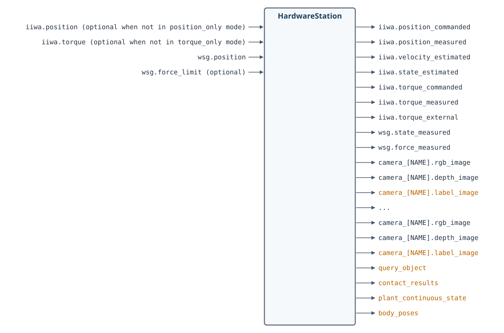
端口图按原文定义重新排版。optional 表示可选输入；橙色表示仅在仿真中可用的输出端口。
图中橙色的输出被作者戏称为“作弊端口”（cheat ports）。仿真中可以直接获得它们，但真实机器人无法提供，因为这些端口依赖我们对场景真值的了解。
示例 2.6 遥操作演示中的硬件工作站¶
第 1 章的遥操作 notebook，就是通过 MakeHardwareStation 接口搭建仿真的。现在，你应该更清楚这个子系统内部在做什么了。如果想再看一遍，可以打开下面的示例。
运行示例：在 Colab 中打开
示例 2.7 双臂操作工作站¶
只需在 YAML 文件中多写几行，就可以用同一个 MakeHardwareStation 方法，搭建一个双臂工作站。
运行示例：在 Colab 中打开
如果还想仿真其他机器人或驱动程序，可以直接修改讲义配套 manipulation 仓库中的 station.py。也可以告诉我，通常我能很快把它们加进去。
2.5.2 HardwareStationInterface¶
从前面的示例可以看到，HardwareStation 虽然本身是一个框图，也可以作为 System 接入更大的框图，与感知、规划和高层控制系统组合。它还提供了一层抽象，把仿真和真实硬件衔接起来。
调用 MakeHardwareStation 时，只要传入 hardware=True，得到的就不再是仿真工作站，而是一个接口几乎相同的系统，叫作 HardwareStationInterface。
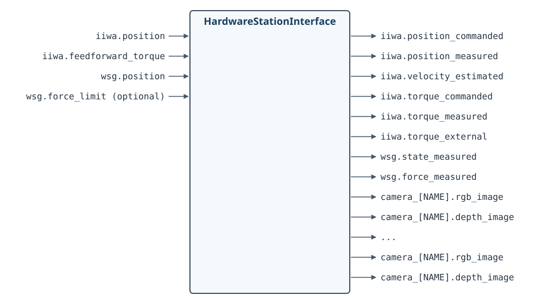
HardwareStationInterface 同样是一个框图，但内部不再使用 MultibodyPlant、SceneGraph 等仿真组件，而是通过网络消息传递，与那些连接各个硬件驱动程序的小型可执行程序通信。
如果进一步查看实现，就会发现我们使用的是 LCM，而不是 ROS 消息。主要原因是，对公开仓库而言，LCM 是更轻量的依赖；此外，在驱动层接口中，多播 UDP 比 TCP/IP 更合适。不过，许多 Drake 开发者和用户，也会在 ROS／ROS2 生态中使用 Drake。
如果你已经有类似的机器人硬件，想在自己的计算机上运行硬件接口，可以查阅附录。我已经开始在那里整理驱动程序和物料清单。
2.5.3 HardwareStation 独立仿真¶
采用 HardwareStation 的工作方式，就比较容易从仿真开发过渡到真实机器人。为此，我们还提供了一个独立工具：hardware_sim。
这个 Python 脚本通过命令行接收同样的 YAML 文件，在单独的进程中启动仿真，并像真实机器人硬件那样收发消息。这样，就可以测试加入消息传递层之后，整套逻辑是否仍然正常。
消息传递会带来一定延迟和非确定性。在开发初期使用 MakeHardwareStation(..., hardware=False) 时，我们有意避开了这些因素；独立仿真则让我们能把它们重新纳入测试。
python3 drake/examples/hardware_sim/hardware_sim.py \
--scenario_file=station.yaml --scenario_name=Name
2.6 更多 HardwareStation 示例¶
我很喜欢同学们为这门课完成的项目。为了支持这些项目，也希望能帮到你将来的项目，我会在这里继续收集不同硬件配置下搭建 HardwareStation 的示例。这个列表还会不断增加。
示例 2.8 搭载 Allegro 手的 iiwa¶
这个简单示例把 iiwa 上的 Schunk WSG 夹爪换成了 Allegro 手。注意，Allegro 手有左手和右手两个版本。
运行示例：在 Colab 中打开
2.7 练习¶
练习 2.1 折算惯量的作用¶
本练习研究折算惯量怎样影响机器人的关节空间动力学，以及简单的位置控制律。所有操作都在这个 notebook中完成。
你需要完成以下步骤：
-
对一个配有电机和减速器的单摆，推导其一阶状态空间动力学：
\[ \dot{\mathbf{x}} = f(\mathbf{x},\mathbf{u}). \] -
在相同的位置控制律下，比较直驱单摆与配有大减速比减速器的单摆，它们的运动表现有什么不同。
练习 2.2 操作工作站的输入和输出端口¶
本练习带你了解，操作工作站在 Drake 系统框架中是怎样被抽象和封装的。所有操作都在这个 notebook中完成。
你需要完成以下步骤：
- 学会访问操作工作站的输入和输出端口，并读取其中的内容。
- 查看不同端口的数值，理解各个端口代表什么。
练习 2.3 在 Drake 中直接遥操作关节¶
本练习需要实现一种在 Drake 中直接控制机器人关节的方法。所有操作都在这个 notebook中完成。可以参考第 1 章的示例 notebook，相关讲解见第 1 章中文译文。
你需要完成以下步骤：
- 替换第 1 章示例中的遥操作接口，改用其他 Drake 函数，直接控制机器人的各个关节。
练习 2.4 在 Drake 中实现 PID 控制¶
本练习需要为机器人的关节实现一个 PID 控制器。所有操作都在这个 notebook中完成。
你需要完成以下步骤：
- 为机器人关节实现一个 PD 控制器。
- 在 PD 控制器的基础上，扩展出完整的 PID 控制器。
参考文献¶
-
Jemin Hwangbo、Joonho Lee、Alexey Dosovitskiy、Dario Bellicoso、Vassilios Tsounis、Vladlen Koltun、Marco Hutter，《让腿式机器人学习敏捷的动态运动技能》（“Learning agile and dynamic motor skills for legged robots”），Science Robotics，第 4 卷，第 26 期，文章编号 eaau5872，2019 年。
-
Haruhiko Asada、Kamal Youcef-Toumi，《直驱机器人：理论与实践》（“Direct-Drive Robots — Theory and Practice”），MIT Press，1987 年。
-
P. M. Wensing、A. Wang、S. Seok、D. Otten、J. Lang、S. Kim，《MIT Cheetah 的本体感知执行器设计：面向动态腿式机器人的冲击缓解与高带宽物理交互》（“Proprioceptive Actuator Design in the MIT Cheetah: Impact Mitigation and High-Bandwidth Physical Interaction for Dynamic Legged Robots”），IEEE Transactions on Robotics，第 33 卷，第 3 期，第 509–522 页，2017 年 6 月。
-
Navvab Kashiri、Jörn Malzahn、Nikos Tsagarakis，《力矩控制执行器的传感器设计：基于应变片与编码器原理的比较研究》（“On the Sensor Design of Torque Controlled Actuators: A Comparison Study of Strain Gauge and Encoder Based Principles”），IEEE Robotics and Automation Letters，卷号 PP，02，2017 年。
-
A. Wedler、M. Chalon、K. Landzettel、M. Görner、E. Krämer、R. Gruber、A. Beyer、H. J. Sedlmayr、B. Willberg、W. Bertleff 等，《用于空间机器人应用的 DLR 动态执行器模块》（“DLRs dynamic actuator modules for robotic space applications”），Proceedings of the 41st Aerospace Mechanisms Symposium，2012 年 5 月 16–18 日。
-
G. A. Pratt、M. M. Williamson，《串联弹性执行器》（“Series elastic actuators”），Proceedings 1995 IEEE/RSJ International Conference on Intelligent Robots and Systems. Human Robot Interaction and Cooperative Robots，第 1 卷，第 399–406 页，1995 年 8 月。
-
Alin Albu-Schaffer、Christian Ott、Gerd Hirzinger，《柔性关节机器人位置、力矩与阻抗控制的统一无源性框架》（“A unified passivity-based control framework for position, torque and impedance control of flexible joint robots”），The International Journal of Robotics Research，第 26 卷，第 1 期，第 23–39 页，2007 年。
-
Tao Pang、Russ Tedrake，《准静态刚性多体系统的鲁棒时间步进方法》（“A Robust Time-Stepping Scheme for Quasistatic Rigid Multibody Systems”），IEEE/RSJ International Conference on Intelligent Robots and Systems (IROS)，2018 年。原文链接
-
Yong-Jae Kim、Junsuk Yoon、Young-Woo Sim，《具有类人冲击吸收能力的流体润滑灵巧手指机构》（“Fluid Lubricated Dexterous Finger Mechanism for Human-Like Impact Absorbing Capability”），IEEE Robotics and Automation Letters，第 4 卷，第 4 期，第 3971–3978 页，2019 年。
-
Lael U. Odhner、Leif P. Jentoft、Mark R. Claffee、Nicholas Corson、Yaroslav Tenzer、Raymond R. Ma、Martin Buehler、Robert Kohout、Robert D. Howe、Aaron M. Dollar，《用于鲁棒操作的柔顺欠驱动机械手》（“A Compliant, Underactuated Hand for Robust Manipulation”），International Journal of Robotics Research (IJRR)，第 33 卷，第 5 期，第 736–752 页，2014 年。
-
Eric Brown、Nicholas Rodenberg、John Amend、Annan Mozeika、Erik Steltz、Mitchell R. Zakin、Hod Lipson、Heinrich M. Jaeger，《基于颗粒材料阻塞的通用机器人夹爪》（“Universal robotic gripper based on the jamming of granular material”），Proceedings of the National Academy of Sciences，第 107 卷，第 44 期，第 18809–18814 页，2010 年。
继续阅读：上一章：引言（中文） · 全书目录与前言（中文） · 下一章：基本的抓取与放置（中文）
无障碍访问 · © Russ Tedrake, 2026